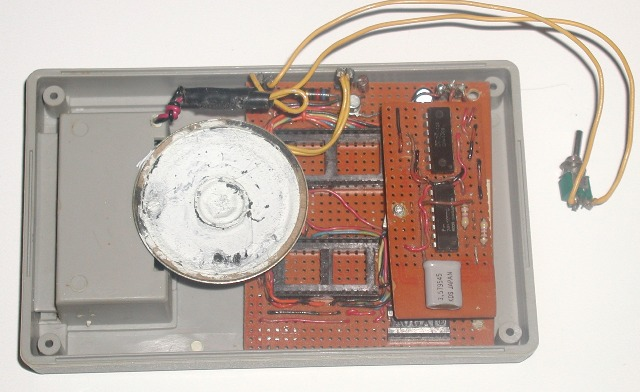

Music Box
This 1802 based music box plays several tunes encoded in EPROM. The speaker is driven by the Q line which is connected
to a simple transistor circuit (visible at the top of the picture). The system too has been scavenged for parts. Note:
I cannot remember why I would have painted the speaker white
